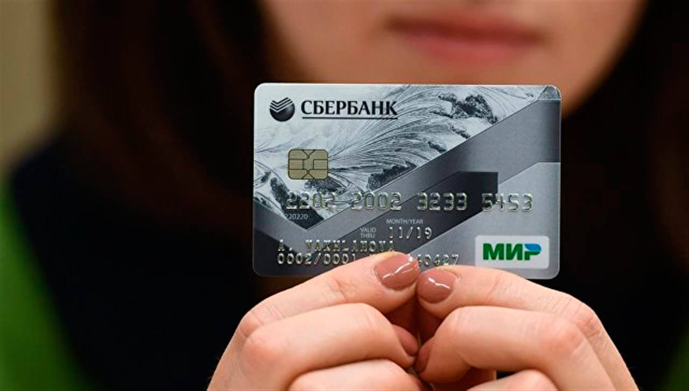

Пластиковая карта МИР от Сбербанка — всё о преимуществах и недостатках её использования
Содержание
Банки выпускают карточки Visa, MasterCard, своевременно заменяют их, обеспечивают получение наличности, доступ клиента к счету карты. Главную роль при взаиморасчетах с помощью пластика играют платежные системы.
Управление компаний Виза, МастерКард расположено в США. Сложные международные отношения сделали ненадежным использование их продуктов в Российской Федерации. Появилась необходимость организовать работу карт собственными силами.
Российская система была разработана и запущена по инициативе правительства. Перед ней поставлены серьезные задачи:
- обеспечить безналичные расчеты;
- стать привлекательной для клиентов;
- создать альтернативу Визе, МастерКарду.
Ознакомимся с платежной картой МИР Сбербанка, узнаем, как решаются поставленные задачи.
Российская система платежей
Одни из первых иностранных санкций в 2014 году касались банковских карт. Они перестали работать на территории Крыма. В этом же году началась работа над собственной платежной системой. Все желающие внесли предложения и выразили свое мнение относительно названия и логотипа. В декабре 2015 года были выпущены и начали работать первые российские карты МИР.
Пластик национальной системы действует на территории всей РФ, включая Крым. За пределами государства воспользоваться МИРом проблематично, большинство стран его не принимают.
Несмотря на более скромный функционал по сравнению с международными картами, МИР:
- является платежным средством, который продолжит работать даже в случае отказа в обслуживании Visa, MasterCard;
- делают нерациональными санкции в отношении международного пластика, косвенно обеспечивают его стабильную работу.
Что это за карта и она зачем нужна?
Основной поток клиентов МИР – это пенсионеры, военнослужащие и бюджетники. С 2017 года стартовала замена международных карт на российские.
По федеральному закону деньги из бюджета больше нельзя получать с участием иностранных инструментов. Исключение сделано для пенсионеров: они могут перейти с Maestro при плановом перевыпуске, вплоть до середины 2020 года.
Мера обеспечивает:
- независимость пенсий и зарплат от решений других государств;
- приличную клиентскую базу молодой системе, которая не выдержала бы рыночной конкуренции.
Как выглядит
Пластиковая карта МИР Сбербанка стандартных размеров. На нее нанесен номер, фамилия, имя держателя, срок действия, встроен электронный чип. На оборотной стороне находятся магнитная лента, полоса из высокопрочной бумаги для подписи держателя, CVC–код.

Дизайн выполняется на усмотрение банка, периодически обновляется. Обязательным условием является присутствие логотипа в бело-зелено-голубом цвете. При беглом взгляде отличия пластика от международного малозаметны.
Номер карты
16 цифр на лицевой стороне являются номером карты. Не путаем его с номером счёта. Он есть в реквизитах, которые можно получить в банке или узнать в личном кабинете интернет-банкинга.
На какой срок выпускается
Продукт действителен на протяжении 5 лет. Разработчики заявляют о его повышенной прочности и защите от подделок.
Чем отличается от других платёжных систем?
Различия существенные:
| МИР | Международные | |
|---|---|---|
| Зона действия | Вся Россия, Армения. Остальные страны только по кобейджинговым картам. | Все страны, включая Россию. Исключение – территория Крыма из-за санкций. |
| Валюта | Рубль | Рубль / евро / доллар США |
| Срок действия | 5 лет | 3 года |
| Возможность использовать в зарплатных проектах | Для всех | Только для работников коммерческих организаций |
| Для пенсий | Подходит | Не соответствует по закону |
| Технические сбои | Частые | Редкие |
| Зависимость от внешней политики | Низкая | Высокая |
Где можно расплачиваться
Где можно расплачиваться
MIR принимают:
- все розничные магазины России (обязаны с октября 2017);
- поставщики коммунальных услуг;
- государственные и муниципальные учреждения, принимающие оплату по карте.
Ограничения:
- не во всех интернет-магазинах можно расплатиться, особенно с участием иностранных компаний;
- нет возможности использовать за рубежом.
Можно ли расплачиваться за границей?
Пластик работает на территории Армении. В остальных странах МИР не принимается. Ведутся переговоры о приеме в странах ЕврАзЭС, Турции, ОАЭ, Таиланде и других популярных курортах. Пока соглашения не достигнуты.
Функции:
- безналичная оплата;
- получение наличных в банкоматах и кассах;
- отправление и получение переводов, в том числе выплат из бюджета.
Возможности
Разобравшись, что за карта МИР от Сбербанка и зачем нужна, полезно узнать о ее дополнительных возможностях:
- доступ к удаленным сервисам;
- пополнение счета наличными и безналичными переводами;
- подключение автоплатежей на оплату сотовой связи, коммунальных и других услуг;
- перевод денег на отдельный счет клиента комфортными суммами в автоматическом режиме (сервис Копилка).
Кобейджинговая карточка МИР Сбербанка
Две или более платежные системы могут договориться о совместной работе. Один и тот же пластик будет обслуживаться на разных территориях в разных системах. Такая услуга практикуется при отсутствии технического обеспечения отдельных компаний в каких-то государствах, называется кобейджинг.
МИР заключил соглашения с MasterCard (Maestro), UnionPay, JCB. Некоторые банки начали выпуск кобейджинговых карт. Из-за низкого спроса, невозможности использовать их в качестве зарплатных и пенсионных — Сбербанк их выпуском не занимается.
На какие категории делятся карты МИР
На официальном сайте Сбербанка предлагаются три вида носителей: классические, золотые, социальные/пенсионные карты. В премиум сегменте индивидуальные предложения поступают участникам зарплатных проектов.
Кредитная
Продукт подразумевает предоставление клиенту возможности воспользоваться некоторой суммой, которая доступна через оплату картой или снятие с неё наличных. За пользование средствами банк взимает комиссию. При безналичной оплате действует льготный период от 20 до 50 дней, когда клиент может пополнить баланс карты, не уплачивая процентов.
Российская система молодая, и на 2018 год Сбербанк не предлагает кредитные карты МИР.
Дебетовая
Базовый набор функций, задача которого заменить наличность в портмоне клиента. Карта позволяет:
- внести на нее наличные;
- получать, отправлять переводы;
- расплачиваться на кассе, предъявляя вместо денег пластик;
- при необходимости снять средства в банкомате;
- пользоваться удаленными сервисами банка.
Сбербанк выпускает наиболее распространенную разновидность пластика – дебетовые без овердрафта. Выглядят они похожими на международные.
Стандартная
Используется преимущественно в качестве зарплатной для госслужащих и других бюджетников. Держателям в таком случае карта бесплатна.
Пластик обеспечивает полный функционал дебетовой карты. Лимиты на получение наличных, кэшбэк такие же, как у международных Standart.
Золотая
Суточный лимит на снятие наличности установлен в 2 раза больше по сравнению со стандартным продуктом.
Начисляются повышенные бонусы Спасибо при безналичных оплатах в предыдущем месяце на сумму свыше 15 000 рублей.
Карта соответствует условиямполучения выплат из бюджета. Однако из-за высокой стоимости организации отказываются ее содержать. По желанию вы можете оплачивать годовое обслуживание самостоятельно, сообщив реквизиты для перечислений.
Социальная
Льготный продукт. Предоставляется подтвердившим свое право на получение выплат из ПФР и других пенсионных органов, а также тем, кто переходит с Маэстро Социальной.
ОтПенсионной МИРможно отказаться, выбрав другой способ получения выплат: на депозитный счет в банке или наличными через почту.
Пенсионеры имеют право сохранить международную карту Maestro, но она перестанет функционировать как льготная. Пенсию на неё получать будет невозможно, так как ее работу обеспечивает иностранная организация.
Другие разновидности
В прессе регулярно появляются анонсы о предстоящем запуске. Но до конца первого полугодия 2018 премиальные и кредитные карты МИР в Сбербанке в свободном доступе так и не появились.
По персональному предложению некоторым участникамзарплатных проектовпредлагают получить дебетовую Премиальную или Премиальную+. На сайте банка отсутствует точная информация о тарифах и условиях обслуживания. Имеется сообщение, что продукты аналогичны Platinum и Infinite.
Премиальный международный пластик обеспечивает повышенные лимиты на обналичивание, повышенные бонусы Спасибо, VIP-обслуживание, Infinite – дополнительно бесплатное расширенное страхование в путешествиях.
Стоимость обслуживания
| Классик | Пенсионная | Голд | |
|---|---|---|---|
| Стоимость обслуживания | 750 руб. в 1-й год, 450 – каждый последующий | Бесплатно | 3000 руб. за каждый код |
| Плата за перевыпуск по причинам, зависящим от держателя | 150 руб. | 30 руб. | Бесплатно |
| Суточный лимит на получение наличных без комиссии, тыс. руб. | 150 | 50 | 300 |
| Месячный максимум обналичивания без комиссии | 1,5 млн | 500 тыс. | 3 млн |
| Начисление процентов на остаток | – | 3,5% | – |
| Мобильный банк | 60 руб./мес. | 30 руб./мес. | Бесплатно |
| Бонусы | По общим правилам | Возможность получать повышенные | |
Как получить?
- Подайте заявление, сообщите паспортные данные.
- Дождитесь СМС о готовности карты к выдаче. Этот этап длится от 2 до 14 дней в разных регионах. Изготовление часто происходит в другом городе, требуется время на доставку.
- Предъявите паспорт, получите карту.
Способы получить карту
Выдача происходит всегда в офисе банка. Заказать можно там же или через интернет.
Условия и требования
Для получения классических и золотых МИР:
- возраст от 14 лет;
- постоянная или временная регистрация в РФ.
В подтверждение предъявите паспорт, если регистрация временная, а также свидетельство.
Соблюдение требований, необходимых для выпуска пенсионной карты:
- гражданин любого государства и лицо без гражданства;
- в возрасте не младше 18 лет;
- с постоянной или временной регистрацией в России;
- подтвержденное право на получение пенсии от ведомств в РФ.
Соответствующие документы:
- паспорт;
- справка о получении пенсии с синей печатью;
- при наличии – свидетельство о временной регистрации.
В отделении
Обратитесь к сотруднику банка, воспользовавшись электронной очередью. Предъявите паспорт и сообщите о своем желании получить пластик.
Работник расскажет вам о продукте, вы можете попросить письменные правила, тарифы, ознакомьтесь с ними. Задайте интересующие вопросы, в обязанности менеджера входит разъяснение всех неясностей клиенту.
Заполните стандартное заявление. Сотрудник сообщит ориентировочное время доставки карты.
Через интернет
Онлайн-заявка доступна на сайте банка. Зайдите на страницу с информацией об интересующей карте, кликните на кнопку оформления. Алгоритм будет отличаться от того, действующий вы клиент или новый. В любом случае в открывшемся меню заполните соответствующие разделы. Банк рассмотрит заявку, в течение 2–3 дней уведомит о результате.
От работодателя
Участники зарплатных проектов могут получить пластик на работе. Однако это возможность, а не обязательство. При желании вы можете забрать карту в отделении по паспорту, не дожидаясь доставки до предприятия. Вы также можете отказаться, сообщив в бухгалтерию любой другой удобный способ получения денег:
- через кассу;
- на депозитный счет;
- на счет другой карты.
Можно ли выпустить к основной дополнительную карту?
Возможность предоставляет только Gold. Стоимость дополнительного пластика 2500 рублей в год. Классическая и Пенсионная МИР не предусматривают выпуск второй карты к счету.
Управление картой
Получить интересующую информацию, выполнить операции безналичной оплаты и переводов можно несколькими способами:
- офис банка;
- банкомат;
- персональный компьютер;
- мобильное приложение.
Лицевой счет карты
Деньги хранятся на счете в банке. Если вы сообщили для перечисления средств реквизиты счета, при замене карты деньги продолжат беспрепятственно поступать. Если вы кому-то дали номер карты для переводов, данные необходимо обновлять после перевыпуска.
Сбербанк онлайн
Удаленный сервис позволяет с любого компьютера или телефона, имеющего выход в интернет, пользоваться и управлять своими счетами в Сбербанке. С его помощью вы можете:
- получать информацию о движениях денег по счетам;
- производить оплату услуг ЖКХ, налоги, сотовую связь, штрафы и другие счетов по реквизитам;
- переводить деньги физическим и юридическим лицам.
Что делать, если не отображается в кабинете?
Обратитесь в отделение банка, либо позвоните в техподдержку по номеру 900.
Причины бывают разные, наиболее распространенные связаны с оформлением:
- опечатка при внесении данных клиента в базу;
- неудачный обмен данными при открытии карт в разных отделениях.
Мобильный банк
Полный пакет удаленного сервиса позволяет получать на телефон:
- уведомления о списании и зачислении средств;
- пароли для подтверждения безналичных операций;
- информацию о задолженности по кредитам;
- предложения банка и другую полезную информацию.
В зависимости от тарифа услуга стоит от 0 до 60 рублей в месяц. Всем клиентам доступен бесплатный экономный пакет, который позволяет получать всю информацию кроме поступления и расходования средств.
Что делать, если не получается оплатить?
Терминалы регулярно отказываются принимать пластик к оплате. Это происходит в розничных, онлайн-магазинах. Возможные причины:
- неправильный PIN;
- истек срок действия;
- карта вставлена ошибочной стороной;
- ошибка при вводе данных карты (интернет);
- пластик поврежден;
- недостаточно средств;
- терминал неисправен;
- продавец неправильно оформляет операцию (например, стажер);
- сбой в работе платежной системы.
Что делать:
- убедитесь в правильности своих действий, повторите попытку рассчитаться;
- попробуйте совершить любую операцию в другом терминале;
- при неудачных попытках в разных терминалах обратитесь за помощью в банк.
Скидки и бонусы
Карты МИР позволяют подключить бонусную программу Спасибо. Баллы в размере не менее 0,5% от всех покупок будут накапливаться на отдельном счете. Партнеры Сбербанка начисляют повышенный кэшбэк, который иногда доходит до 30% и выше.
Многие из них также принимают бонусы к оплате. Список участников и их условия постоянно обновляются, отображаются на сайте банка в разделе Спасибо. Ознакомьтесь с актуальной информацией.
МИР предлагает зарегистрировать карту на своем сайте и участвовать в программе кэшбэка. Особенность сервиса в том, что получить бонусы можно далеко не во всех регионах России.
Розыгрыши
МИР поощряет за оплату покупок картой. Регулярно проходит акция, по которой клиенты:
- регистрируют пластик на сайте платежной системы;
- расплачиваются в магазинах МИРом;
- все покупки от 500 рублей участвуют в розыгрыше ценных призов – сумм до 1 миллиона рублей, автомобилей.
Плюсы и минусы карты
Преимущества карты МИР от Сбербанка:
- возможность получать выплаты из бюджета по пластику – основное достоинство;
- наличие бесплатных предложений;
- широкая сеть банкоматов;
- привлекательные программы лояльности как от банка, так и от платежной системы;
- возможность использования в Крыму.
Имеются серьезные недостатки:
- система новая,ее работа дает иногда сбои;
- серьезные ограничения при оплате за границей;
- отсутствие кредитных продуктов;
- единственная валюта счета рубль;
- не все интернет-магазины принимают МИР;
- навязывание функции бесконтактной оплаты;
- цена обслуживания такая же, как у международных продуктов, качество уступает.
Видео: о создании национальной платежной системы
Заключение
Оценивая для себя продукт карта МИР от Сбербанка плюсы и минусы, многие делают выбор в пользу международных конкурентов. Мы можем по-прежнему пользоваться Визой и МастерКард за свой счет. Отсутствуют препятствия снимать, переводить зарплату или пенсию с социального, зарплатного пластика на другой.
Однако МИР – важный этап в экономическом развитии России. Государство создало национальную платежную систему, и содержит её: карты бесплатны для получателей выплат, но бюджет оплачивает их обслуживание. Теми самыми деньгами, которые уходили в иностранные компании Visa, MasterCard.
Система имеет большой потенциал. Насколько грамотно он будет реализован, узнаем через несколько лет.


Прошу разъяснить, почему Сбербанк ограничивает по возрасту открытие дебетовой карты. Мне 70 лет, я гражданин Российской Федерации. Или мы, кому 70 и выше — уже не человеки, не люди? А между прочим я продолжаю активно работать, я профессор.
Татьяна, добрый день! Не совсем верно. Сбербанк ограничивает выдачу кредиток — до 65 лет. А на дебетовый пластик таких ограничений нет.
Какие преимущества этой Карты в аэропорту? Есть какие-то привелегии?